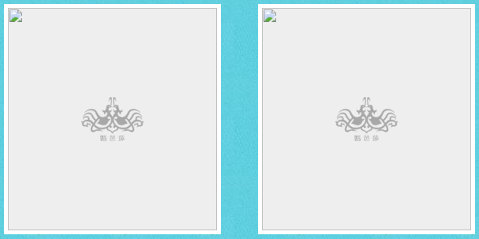
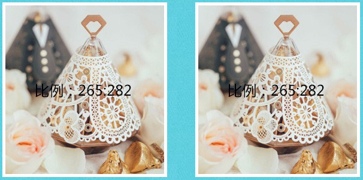
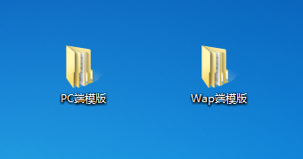
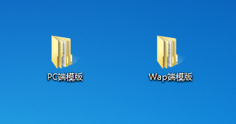

对自己在本地做的所有项目做文件分类是很有必要的，因为公司的专题页面分为“商家专题”和“自创专题”以及“EDM专题”，而且在平时工作中还会制作除了本城市外的其他城市专题页面，所以需要对前端所做的所有页面做文件分类，方便统计、查看和管理。
文件分类
【第一步】：先创建两个主要文件夹：“商家专题页面合集”和“商家切板页面合集”，并且，里面也建议继续加上第几届子分类,同时还建议在每一届文件夹里面在细分出你在那一届支援的城市文件夹（公司平均每个季度都会有展会开办，我们平时的主要工作任务也都是围绕着公司展会进行任务分配的），之后你做的所有页面都要分类放在这两个一级文件夹里面。


【第二步】：为什么要这么麻烦的分类，一个是便于管理，还有一个是便于统计；比如我们每次都会在展后做一个统计，让你写出你在2017年某一届的时间范围类做了多少个“公司自创专题页面”（EDM也属于这里），多少个“商家切板专题页面”，分别支援过哪些城市，并做了多少个页面，只要你能答出来，上面的的文件分类可以不用遵循。
页面制作规范：html
(1)PC和Wap都采用流式模块化布局，并要有注释：
(2)因为PC页面头图的设计比较多，所以头图一律采用定位布局，就是设置img的宽度为1920px（头图一般都是1920px的），然后自己设置css样式，让这个1920px的图片在水平方向居中就可以了（position:absolute; left:50%; margin-left:-960px; ）。
(3)尽量不使用html5标签，因为后台框架可能会忽略这些标签。
(4)由于后台框架对img图片的处理在“非可编辑模式”和“可编辑模式处理”机制不同，所以，前端小伙伴在使用图片时尽量遵循以下规则： (·)页面中的不可编辑图片尽量保存png格式（比如头图、背景图等）。 (·)需要顾问上传的图片格式尽量为jpg格式（比如商家店铺图片等）。
(5)页面可编辑文本内容不要出现这两个符号：<> {}。
(6)我们这边做的所有专题wap页面(包括商家切板)，在除安卓系统以外的系统下面都要在最底部都要加上“注：以上活动与苹果公司无关”,其结构和样式以及js判断代码如下：
页面制作规范：css
(1)公司采用less或sass编写css（目前首页给出less教程），不过有一点要注意，就是less和sass都有转换rem的插件，这个是必须要下载的，在文件“Sublime代码编辑器”里面有“cssrem”文件，可以自己配置到sublime插件里面 ，这个插件的具体配置问同事或者百度。
(2)class命名规则：因为我们的代码都会放入后台框架中，而后台框架有一些已经写好的功能也规定了class，所以为了避免不必要的冲突，我们采用这种命名方式：专题名称-xxxx，或者你有更好的命名规则也可以。 因为我们的代码都会放入后台框架中，而后台框架有一些已经写好的功能也规定了class（比如：nav、btn、footer、header等），所以为了避免不必要的冲突，我们采用这种命名方式：专题名称-xxxx，或者你有更好的命名规则也可以。
(3)所有可编辑的img图片都单独设置宽度和高度，注意不要用百分比去设置，在编辑模式下可能会出问题。
(4)不要使用群组选择器，比如：h1,h2,h3,{ ....... } ，群组选择器的样式会覆盖系统页面的样式。
(5)a链接文字默认在pc和wap下面是带有下划线的，不要在body里面统一设置去除下划线的样式，因为这在后台框架中可能失效，所以我们都是在一个父级class下面去设置：父级class a{ text-decoration: none; }。
(6)如果a链接里面的href值是留给顾问去填写的，那么a链接的内容不得为空值，否则在我们的后台模版的编辑模式下会出问题，比如有一个a链接的按钮，按钮样式比较复杂，你可以用图片代替但不能用背景代替。
(7)如果a链接里面的href值和文字内容是留给顾问去填写的，那么a链接里面不得出现文字内容和其他嵌套标签并存的现象，否则顾问无法编辑文字和链接。
(8)如果你使用了css3的选择器属性（比如：nth-child），记得加权重 !important，不然你的代码放入后台模板中的时候，css3代码可能出现bug。
(9)pc和wap端的背景色要在body的最下面去添加style标签去改，不然后台模板里面添加不上设置的body背景样式。
(10)专题页面很多可编辑img都必须设置公司的LOGO做为img的加载背景图(记得给这类图片添加宽高样式)。 
(11)对于一些需要顾问去上传图片的地方，在切psd图时，要把图片的尺寸写上去（不会让设计教），并且图片代码部分要给宽度和高度；这样做是为了方便顾问在上传图片资料时能够清楚的知道他们要上传多大尺寸的图片。 
(12)由于在wap端给一个元素设置了height=line-height这样的样式，会导致元素文本内容不居中显示的问题，所以，为了让文本内容居中显示，统一采用上下padding值去设置。
页面制作规范：js
因为都是单页面开发，所以我们建议尽量把js写在js文件里面，并且统一规范。如下图所示，在创建的对象下面去挂载一些方法和属性，这样也是为了尽可能的避免代码污染，同时也方便其他同事在修改或添加其他功能时更加安全和方便。
专题页面制作流程
自创专题页面都是由公司顾问提出具体页面需求，然后设计按照需求去设计专题页面，之后便给到前端部分制作。但由于在工作中，专题页面制作的时候往往都是由顾问或设计口头阐述页面的某些地方的特殊效果，这样就造成了很大的问题，不是忘记就是遗漏掉某些页面效果，这样就不得不重复的修改这个专题页面，所以我们就制定成一个游戏规则去执行，也是为了节省更多时间，和不必要的麻烦，当然如果专题页面比较简单的话，由设计人员口头阐述也是可以的，具体要不要出一个说明文档，主要看你自己的需求。
专题页面制作规则： 1---设计做完设计稿后，形成的jpg文件发到顾问那边（pc+wap） 2---顾问在根据自己专题页面的具体情况写一个需求文档给到设计 3---设计拿到文档后可以在里面做需求补充 4---设计确认后发给前端制作 5---如果在制作的过程中，设计部门或顾问那边对需求有变更，要及时告知前端，前端在做页面的更改
专题页面修改规范
如果顾问要你去改已经上线的页面里面的东西该如何处理：
专题页面修改规范 1---如果这个页面不是你写的，你让他去找到相应的人去修改 2---如果这个页面是你写的，要分两种情况去对待： (·) 页面有bug，或者样式出现错误等由你自己引起的错误：你要改 (·) 页面没有问题，只是顾问觉得这个地方想改（比如：样式、结构等非你造成的，让顾问先去找设计，设计同意更改之后再去改） 3---其实以上问题也视情况而定，如果改的东西不多，改起来又简单，还是个美女或帅哥什么的，改下也是可以的，看你自己把握，只要不是大改就可以
自创专题模版
以上的绝大部分都是“自创专题”页面需要遵循的规范，为了提高工作效率，我们这边也写好了“自创专题模版”，在你下载的文件包里面有此文件（包含pc和wap），如果觉得自己创建文件麻烦的话，可以直接使用这个已经写好的模板文件。
 
